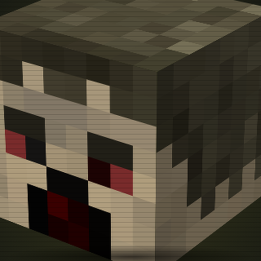

Android · Crafting Dead 1.6.4
DeathAwaits Mobile
Jogue o DeathAwaits no celular. Instale o app, toque em JOGAR e pronto: ele baixa o Minecraft, o Forge e o modpack sozinho e já entra no servidor. BETA
⬇ Baixar o APKDeathAwaits-Mobile.apk · versão de testes
Como instalar
- Toque em Baixar o APK pelo navegador do celular.
- Abra o arquivo baixado. Se o Android perguntar, permita instalar apps desta fonte (é normal para apps fora da Play Store).
- Abra o DeathAwaits e entre com a sua conta Microsoft do Minecraft (só na primeira vez).
- Toque em JOGAR. A primeira vez demora alguns minutos para baixar tudo (uns 200 MB, de preferência no Wi-Fi).
Requisitos
Android 8 ou mais novo (recomendado)
4 GB de RAM no mínimo · 6 GB ou mais é o recomendado
Minecraft original (conta Microsoft que comprou o Minecraft: Java Edition)
~1 GB livre no armazenamento
No celular é preciso ter o Minecraft original: o app pede o login da conta Microsoft uma vez. No PC, o launcher do DeathAwaits continua funcionando normalmente.
Deu problema?
Chame a gente no Discord. Se o jogo fechar sozinho, no app use Compartilhar logs e mande o arquivo para a staff.